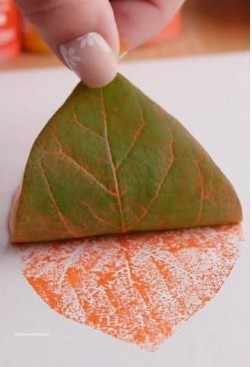

TODDLERS
One Little Leaf
Toddlers explore a real leaf through touch and observation before using paint to create a single leaf impression on paper.
The focus is on purposeful movement, hand–eye coordination and cause and effect. Through pressing and lifting, children discover the marks they create while learning vocabulary for materials, colours and actions.